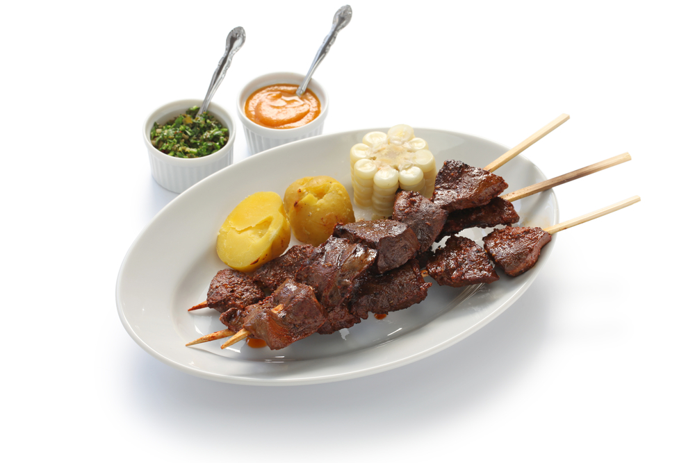

ANTICUCHOS

INGREDIENTS
- 1 lb of beef heart, cleaned and cut into small cubes
- 2-3 cloves of garlic, minced
- 2 tablespoons of ground cumin
- 1 tablespoon of paprika
- Salt and pepper to taste
- 1/4 cup of red wine vinegar
- 1/4 cup of vegetable oil
- Wooden skewers, soaked in water for at least
30 minutes
INSTRUCTIONS
- In a large bowl, mix together the garlic, cumin, paprika, salt, pepper, red wine vinegar, and vegetable oil.
- Add the beef heart cubes to the marinade and stir well to coat.
- Cover the bowl with plastic wrap and marinate in the refrigerator for at least 2 hours or overnight.
- Preheat a grill or grill pan over medium-high heat.
- Thread the marinated beef heart cubes onto the soaked wooden skewers.
- Grill the skewers for 4-5 minutes on each side, or until the beef is cooked to your desired level of doneness.
- Serve the Anticuchos hot with a side of boiled potatoes and aji sauce.
- Enjoy your delicious Anticuchos!